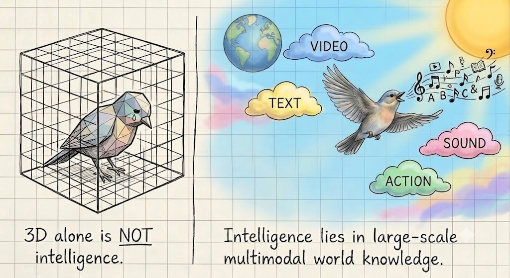

Inspired by recent discussions on bitter lessons in 3D vision within the community, I am writing this blog post to share my perspectives.
TLDR: 3D is not intelligence. If we aim for intelligence, 3D research should move beyond single modality and embrace unified models.

The Golden Era of Learning-based 3D Vision
3D computer vision has advanced at an extraordinary pace. From NeRF to 3D Gaussian Splatting, our field has fundamentally redefined how we represent the physical world. We have rapidly embraced learning-based architectures. This paradigm shift paved the way for feed-forward models, including large reconstruction models like LRM and geometry models like Dust3R.
In CVPR 2025, 3D geometry dominated the stage: the Best Paper went to VGGT, while MegaSaM received a Best Paper Honorable Mention. In CVPR 2026, the field has swept the board once again: the Best Paper was awarded to a feed-forward 4D geometry model (D4RT), the Best Student Paper went to a feed-forward 3D generation framework (TRELLIS), and SAM3D secured another Honorable Mention in 3D reconstruction. They are truly great works!
So what is wrong with 3D when it is developing so well?
Nothing is wrong if our goal is better 3D generation or pose estimation. But if our goal is intelligence, we must stop treating 3D as a standalone destination.
The Walled Garden of Single-Modality
Historically, different modalities like text, 2D images, video, and 3D have been treated as isolated silos, each with its own specialized benchmarks and representations. While language, images, and videos have mature, internet-scale scaling templates, native 3D data remains scarce and difficult to acquire.
However, my pivot was not purely motivated by data scarcity. It stemmed from a deeper realization: we do not experience the world through isolated 3D geometry, but within a fundamentally multimodal environment where all physical and cognitive processes are inherently multi-sensory. This closely aligns with the Platonic Representation Hypothesis, which posits that networks trained on different modalities naturally converge toward a shared, universal representation of reality.
From this perspective, language, pixels, sounds, and 3D structures are not distinct domains, but merely different projection planes of the same underlying world. This does not imply that 3D is no longer important. Quite the opposite: 3D remains one of the most direct ways for intelligence to anchor itself in the physical world. The key shift is conceptual: instead of maintaining 3D as a separate representation or a standalone end task, we should let spatial structure emerge through the joint learning of video, visual generation, and language in unified multimodal models.
The Interconnected Priors of Multimodality
Recent research highlights the strong connections between different modalities. For instance:
- Video/2D to 3D. Novel View Synthesis can be built upon video diffusion models (VFusion3D and Stable Video Diffusion) or image generation models (Qwen-Image and Vision Banana). Additionally, explicit 3D representations can be constructed by leveraging video models (LYRA).
- Language to Vision. LSBS revealed that LLMs, despite being trained only on text, develop rich latent visual priors. Pre-training on certain language data provides reasoning and perception priors that make visual learning and representation alignment much easier.
- Video/Language to Action. Efforts in robotics, such as π0.7, DreamZero, and Cosmos 3, demonstrated that physical action and causal priors can effectively emerge from multimodal representations. Models can learn to transfer and lift implicit action and physical priors directly from passive, web-scale visual and textual data.
3D learning can also benefit other domains, including video generation, robotics, and MLLMs. Treating 3D learning as an isolated task may limit its potential; the boundaries historically drawn between these modalities are often artificial, rather than reflecting how intelligence naturally integrates information.
The Co-Evolution of Multimodality
If our ultimate goal is to contribute to intelligence (instead of a single vision task), we need a paradigm where vision and language co-evolve to foster mutual benefits. Building upon the success of language pre-training, I argue that multimodal intelligence requires a co-evolving pre-training scheme where perceptual capabilities and symbolic reasoning are learned jointly from the ground up. Rather than relying on post-training to align separately trained modalities as a patchwork, joint pre-training allows them to build foundational knowledge and shape a mutual latent representation space from the very beginning.
Consequently, the future of computer vision should increasingly lie in generalized yet scalable models. These foundation models must be capable of digesting diverse, multimodal streams including text, pixels, temporal sequences, and physical actions, without being bottlenecked by task-specific intermediate representations like explicit 3D geometry. We need unified models that can seamlessly "eat" internet-scale data, allowing spatial awareness, physical world dynamics, and semantic reasoning to emerge naturally and cohesively through multimodal pre-training.
Multimodal Modeling
So how should we do multimodal modeling? In our recent work, Beyond Language Modeling, we explored this by training unified objectives where modalities co-evolve. We built scalable foundations for multimodal pre-training and found that world-modeling capabilities—like video navigation—emerge naturally without task-specific training. This shift, echoed by recent Omni models and Cosmos 3, together with earlier work like Unified-IO 2, suggests that natively pre-training a unified architecture across text, video, and a modest amount of 3D, unlocks downstream 3D tasks as a natural, emergent ability.
We will soon release a further study, which systematically dissects how knowledge flows across modalities to derive pre-training recipes (where visual generation emerges as a highly efficient natural byproduct), how task complexity and architectures govern the competition and synergy that dictate design choices, and why we should pre-train modalities jointly from the early stages so that modalities may truly co-evolve.
While there are still many open questions, we believe that breaking down these silos is the necessary path forward. Intelligence will not be found by solving isolated tasks, but by letting our understanding of language, pixels, 3D space, temporal dynamics, sound, and physical reality co-evolve.